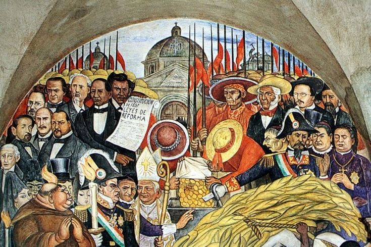

El Liberalismo en México

México tras la Independencia
- No hubo estabilidad en el País
- Existieron dos dilemas fundamentales
- ¿Qué modelo de gobierno adoptar?
- ¿Como organizar el nuevo Estado?
Liberalismo
- Doctrina politica y economica nacida en Europa durante los siglos XVII y XVII
- Promueve la libertad individual, la igualdad ante la ley y la limitación del poder del Estado
- Los liberales consideraban estas ideas para romper con las estructuras impuestas en las etapas de la colonia
Revoluciones que sirvieron de modelo
Claves de la libertad: Revoluciones y aportaciones
| Proceso Historico |
Contexto |
Imagen |
| Revolución Inglesa (1688) |
Afirmación del parlamento y limites al poder real |
 |
| Independencia de EE.UU (1776) |
La libertad y derechos naturales como base del gobierno |
 |
| Revolución Francesa |
Soberania popular e igual ente la ley |
 |
Fundamentos y desarrollo del liberalismo
Influyo en la creación de las primeras constituciones mexicanas y sento bases para un Estado moderno,
con leyes que protegian los derechos de las personas y promovieran la participación ciudadana
Principios del liberalismo Méxicano
Soberania popular
- El poder emana del voto cuidadano
Gobierno Republicano y Federalista
- Autonomia de los Estados
- Libertad de expresión y prensa
- Educación laica y publica
- Eliminación de fuerzas y privilegios
- Reformas Económicas
Creación de una constitución
En 1823 se convocó a un Congreso Constituyente con la finalidad de elaborar la primera constitución.
Durante los debates surgieron dos posturas
- Los Centralistas
- Defendian un gobierno fuerte y concentrado
- Los Federalistas
- Proponian autonomía para los estados
Constitución de 1824
- Se establece la religión catolica como la única oficial y prohibio cualquier cosa
- El primer presidente que gobernó con esta ley fue Guadalupe Victoria
- Se mantuvo activa hasta 1836